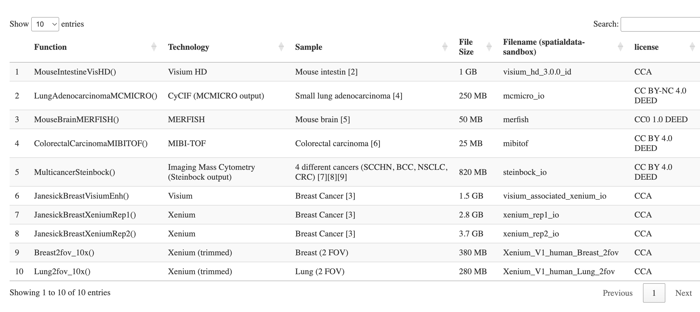

Note: the software being described here is in development. Please file issues here with any concerns.
This R package is devoted to interfacing Zarr-based spatial omics to NHGRI AnVIL. The code base was spearheaded by the R Interoperability team at a CZI-sponsored, scverse-hosted hackathon in Basel in November 2024.
If necessary, install the relevant packages via BiocManager::install("vjcitn/SpatialData", ref="datamart")
As of December 2024 we have the following resources for investigation:

That table can be produced with
library(SpatialData.data)
example(demo_spatialdata)